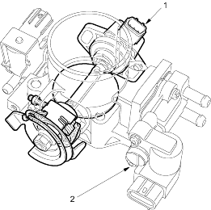

Fuel Supply System
Fuel Cut-off Control
During deceleration with the throttle valve closed, current to the injectors is cut off to improve fuel economy at speeds over 850 rpm (min-1). Fuel cut-off action also occurs when engine speed exceeds 6,400 rpm (min-1) (D14Z5, D14D6 engines), 6,500 rpm (min-1) (D16W7, D16V1 engines), regardless of the position of the throttle valve, to protect the engine from over-revving. With A/T model, when the vehicle is stopped, the PCM cuts the fuel at engine speeds over 5,000 rpm (min-1).
Fuel Pump Control
When the ignition is turned on, the ECM/PCM grounds the PGM-FI main relay which feeds current to the fuel pump for 2 seconds to pressurise the fuel system. With the engine running, the ECM/PCM grounds the PGM-FI main relay and feeds current to the fuel pump. When the engine is not running and the ignition is on, the ECM/PCM cuts ground to the PGM-FI main relay which cuts current to the fuel pump.
PGM-FI Main Relay 1 and 2
The PGM-FI relay consists of two separate relays. The PGM-FI main relay 1 is energised whenever the ignition switch is ON (II) which supplies battery voltage to the ECM/PCM, power to the injectors, and power for the PGM-FI main relay 2. The PGM-FI main relay 2 is energised to supply power to the fuel pump for 2 seconds when the ignition switch is turned ON (II), and when the engine is running.
Intake Air System
Refer to the System Diagram to see the functional layout of the system.
Throttle Body
The throttle body is a single-barrel down draft type. The side portion of the IAC valve is heated by engine coolant from the cylinder head.

- TP SENSOR
- IAC VALVE